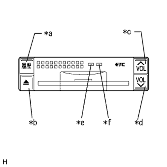
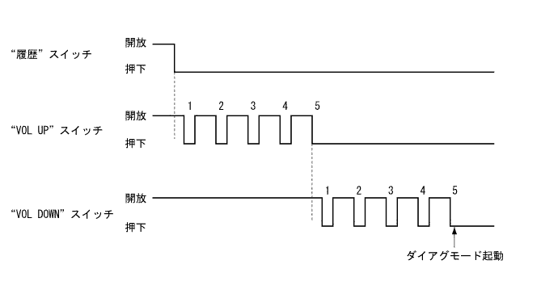
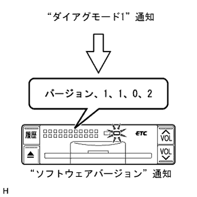
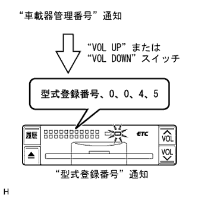
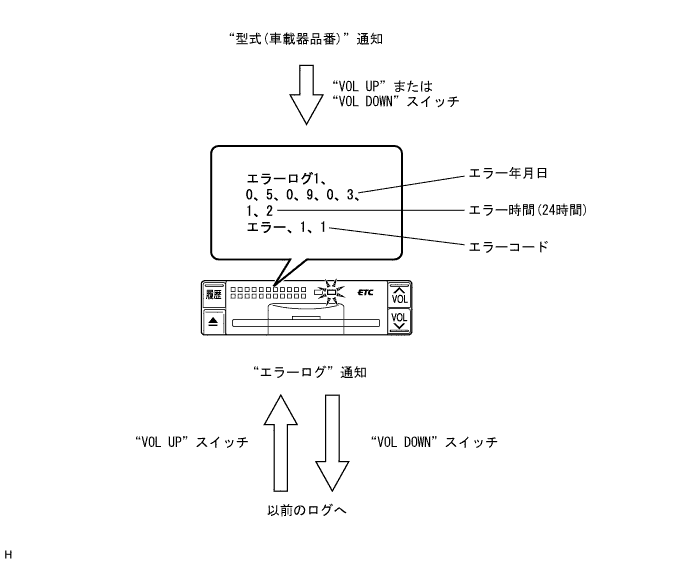
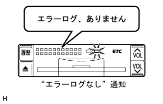

 |
How to Start Diagnosis Mode 1
| *a | History switch |
| *b | Card eject switch |
| *c | VOL UP switch |
| *d | VOL DOWN switch |
| *e | Green indicator |
| *f | Orange indicator |
- □ HINT □
- Software version
- On-board unit management number
- Model registration number
- Model (on-board unit part number)
- Error log
If an ETC card is inserted, remove the card.
- □ HINT □
- Diagnosis mode cannot be entered with a card inserted.
Turn ACC ON.
Press and hold the "History" switch.

While holding the "History" switch, press the "VOL UP" switch 5 times. Hold it down on the 5th press.
While holding the "VOL UP" switch, press the "VOL DOWN" switch 5 times.
Diagnosis mode is entered, the orange indicator comes on, and "Diagnosis 1" is announced by voice.
- □ HINT □
- In diagnosis mode 1, the orange indicator remains on.
- During diagnosis mode, voice announcements are made from the toll collection (ETC) computer assembly at the default volume (volume 6), regardless of whether the HDD navigation system is connected.
 |
 |
Software Version Announcement Mode
When diagnosis mode 1 is entered, the software version is announced by voice following the "Diagnosis 1" announcement.
- □ HINT □
- If the version is 1.102, it is announced as "Version, 1, 1, 0, 2".
Check the announced content.
 |
On-board Unit Management Number Announcement Mode
After the software version is announced, pressing the "VOL UP" or "VOL DOWN" switch announces the on-board unit management number by voice.
- □ HINT □
- If the on-board unit management number is 00003 - 00104885 - 000043, it is announced as "Management number, 0, 0, 0, 0, 3, 0, 0, 1, 0, 4, 8, 8, 5, 0, 0, 0, 0, 4, 3".
Check the announced content.
On-board Unit Management Number Announcement Content Digits Meaning XXXXX (5 digits) SAM (encryption IC) manufacturer code XXXXXXXX (8 digits) SAM production lot No. XXXXXX (6 digits) SAM serial No. - □ HINT □
- The on-board unit management number is announced as "XXXXX - XXXXXXXX - XXXXXX" (X is a number from 0 to 9).
 |
Model Registration Number Announcement Mode
After the on-board unit management number is announced, pressing the "VOL UP" or "VOL DOWN" switch announces the model registration number by voice.
- □ HINT □
- If the model registration number is 0045, it is announced as "Model registration number, 0, 0, 4, 5".
Check the announced content.
Model Registration Number Announcement Content Digits Meaning XXXX (4 digits) Model registration number - □ HINT □
- The model registration number is announced as "XXXX" (X is a number from 0 to 9).
 |
Model (On-board Unit Part Number) Announcement Mode
After the model registration number is announced, pressing the "VOL UP" or "VOL DOWN" switch announces the model (on-board unit part number) by voice.
- □ HINT □
- If the model (on-board unit part number) is 86980 - 22010, it is announced as "Part number 8, 6, 9, 8, 0, 2, 2, 0, 1, 0".
Check the announced content.
Model (on-board unit part number) Digits Meaning XXXXX - XXXXX (10 digits) Model (on-board unit part number) - □ HINT □
- The model (on-board unit part number) is announced as "XXXXX - XXXXX" (X is a number from 0 to 9).
- It is not possible to go back to the content announced so far, so to check previously announced content again, turn the IG OFF once and start over from the beginning.
Error Log Announcement Mode

After the model (on-board unit part number) is announced, pressing the "VOL UP" or "VOL DOWN" switch announces the error codes of the recorded error log by voice.
- □ HINT □
- In error log announcement mode, the error log recorded by the self-diagnosis function of the toll collection (ETC) computer assembly during normal operation is announced.
- When error log announcement mode is entered, the error code of the most recently saved error log is announced. However, if a fatal error (error code 11, 12) is saved, that error log is announced first.
Check the error log announcement content.
- □ HINT □
- The error log consists of date information, time information (24-hour clock) and error code.
- The error log is announced in the order of error date information, time information (24-hour clock) and error code recorded in the error log.
- The toll collection (ETC) computer assembly sets and corrects its internal clock using the date and time information obtained when toll processing is performed. Therefore, if toll processing has not been performed, the error date and time information recorded in the error log may differ from the date and time when the error actually occurred.
If no error log is recorded, "Error log, none" is announced.
If there are error logs older than the error log being announced, pressing the "VOL DOWN" switch announces older logs 1 at a time in order. Also, if there are error logs newer than the error log being announced, pressing the "VOL UP" switch announces newer logs 1 at a time in order.
- □ HINT □
- Up to 20 error logs are saved; if more errors occur, the logs are deleted in sequence starting from the oldest.
- The error log cannot be cleared manually.
How to End Diagnosis Mode 1
Turn the IG OFF or insert a card.
- □ HINT □
- The type of card inserted is not limited to ETC cards. (Diagnosis mode 1 ends even if an incorrect card is inserted)
- When card insertion is detected, diagnosis mode 1 ends (reset is applied), and the green indicator and orange indicator come on for approximately 5 seconds.